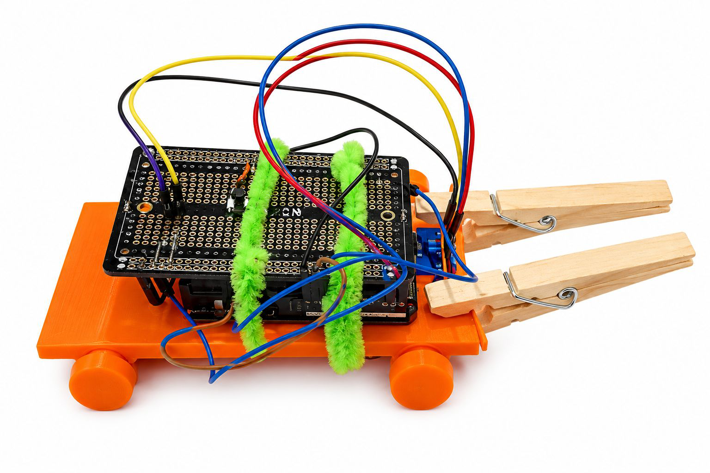
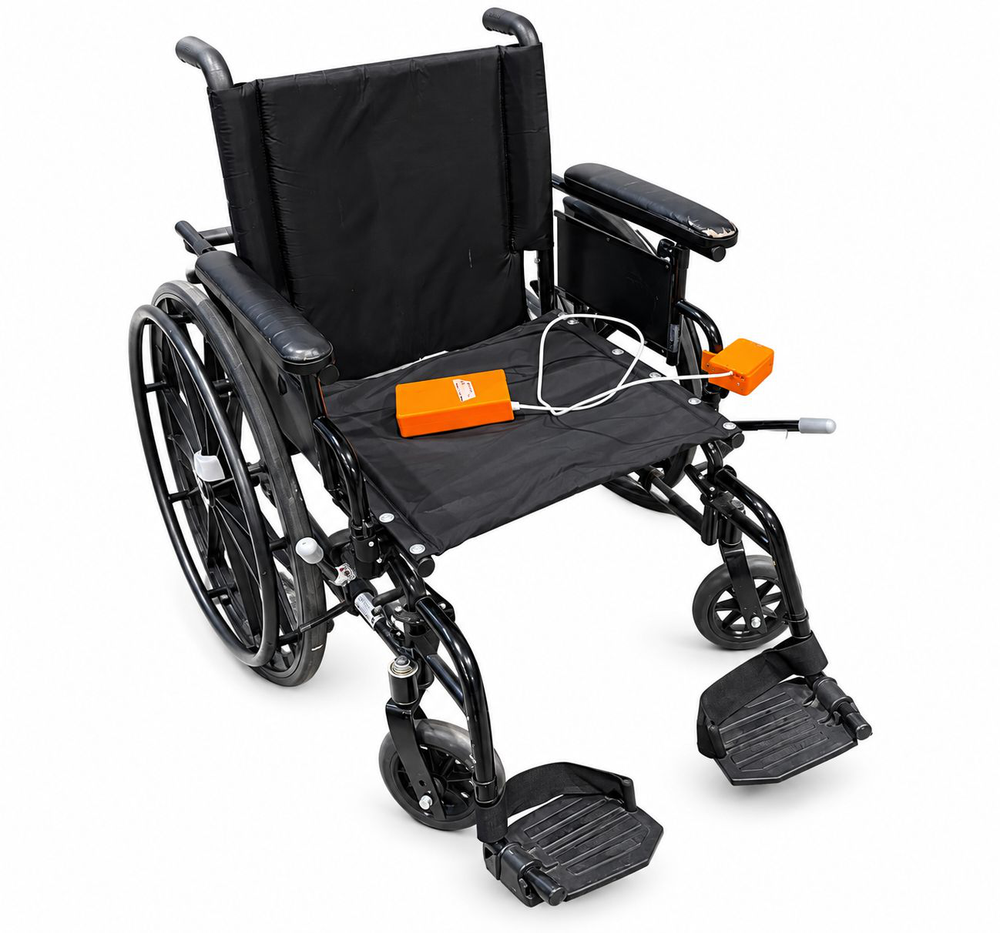
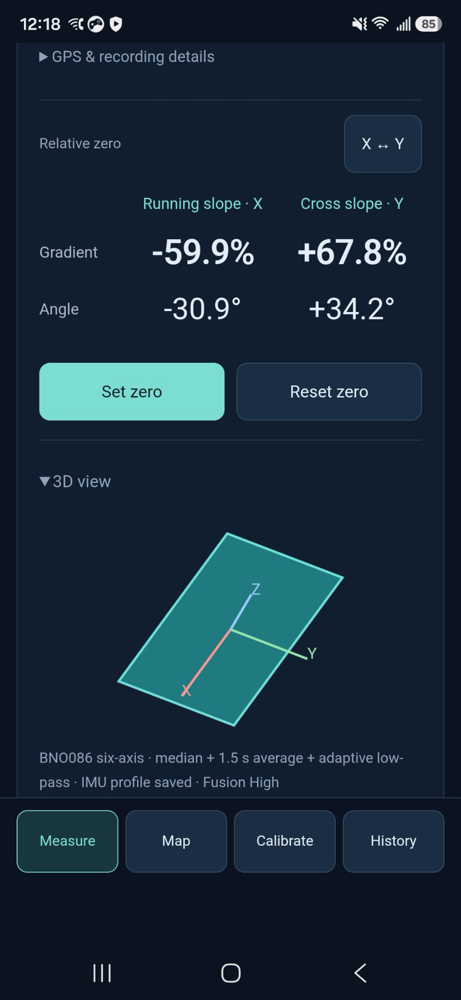
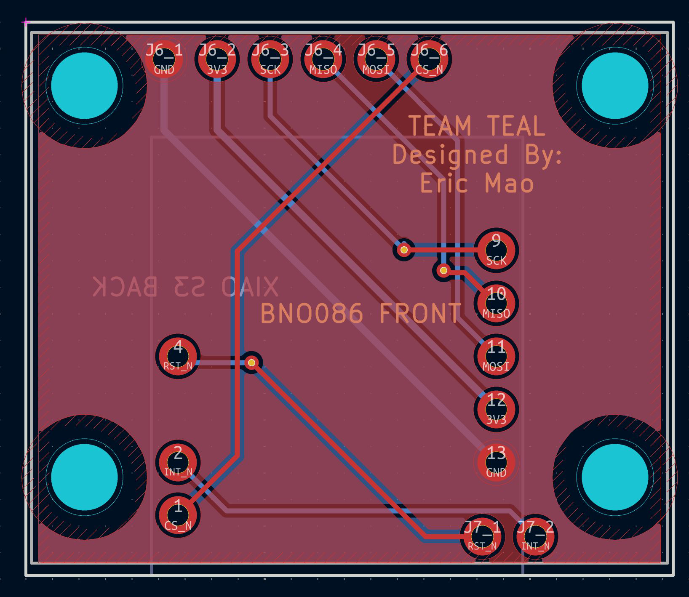

Early sensor platform
A BNO055 IMU connected to an Arduino measured running and cross slope on a small cart. The poster identifies sensor accuracy and mounting unsteadiness as problems in the early design.
DUKE PRATT SCHOOL OF ENGINEERING / THE FOUNDRY
Measuring campus inclines from a wheelchair, with less handling and better information for accessible travel.
A mounted inertial sensor sends running and cross-slope readings to an Android app. The app pairs measurements with phone GPS, maps recorded slopes, and exports data for review.
Explore the final prototype
The project supports Chris Sparrow, Duke University’s Director of Physical Accessibility, in collecting incline information about campus pathways.
The project poster describes the difficulty of surveying a large campus with a handheld digital level. For a wheelchair user, taking measurements on a slope can mean letting go of the wheelchair to handle the instrument.
Develop a device that repeatedly measures inclines from a wheelchair, reduces the need to handle equipment on slopes, and helps the client provide better pathway information to other wheelchair users.
The system supports accessibility surveying. The project title describes its intended application, rather than a certification of ADA compliance.
DESIGN DEVELOPMENT

A BNO055 IMU connected to an Arduino measured running and cross slope on a small cart. The poster identifies sensor accuracy and mounting unsteadiness as problems in the early design.
A BNO086 IMU and ESP32, powered by a battery pack, moved the system onto the wheelchair frame. This stage explored mounting effectiveness and app-based readings.

The Android app brings together 180° calibration, GPS tracking, and data recording. The interface displays both running and cross slope, with an optional orientation view.
FINAL PROTOTYPE

The poster’s final design connects a BNO086 IMU and an ESP32-S3 on a custom PCB. A protective enclosure holds the electronics on a stable wheelchair mount. This repository contains the XIAO ESP32S3 firmware implementation.
TEAL Tilt receives slope measurements over Bluetooth Low Energy, filters readings, and associates them with the phone’s GPS location. The app displays recorded slopes on a map and exports CSV or HTML files. A laptop viewer supports logging and diagnostics.
DESIGN CRITERIA AND TESTING
The table below transcribes the team’s reported prototype tests. GPS localization exceeded the target error and remains the main limitation.
| Design objective | Target | Reported test result | Outcome |
|---|---|---|---|
| Accuracy | Angle: <1% error GPS: <10 m from actual location | Angle: approximately 0.14% error (grade difference) GPS: 23.08 m average error across 10 locations | Marginal |
| Ease of use | Setup in <3 minutes | 40.45 seconds average across 12 participants | Pass |
| Safety | No device readjustment during a run | Zero adjustments during ten 10-meter runs | Pass |
| Portability | Weight <1 lb | Final weight: 0.925 lb | Pass |
| Battery life | >12 hours | >24 hours | Pass |
| Cost | <$100 | Approximately $95 | Pass |
The poster labels the angle metric “error (grade difference).” It does not provide the raw data or a full error calculation, so the value is reproduced as reported and is not converted to absolute angular accuracy. Repository software checks are documented separately in the validation notes.
The poster reports that the prototype met the other design criteria while GPS fell short of its target. The team observed better location behavior while moving, although the reported GPS test used stationary locations.
Future work focuses on a mounting method that accommodates more wheelchair models. The intended next use is to help the client map inclines across Duke’s campus.
HARDWARE EXPLORER
The viewer supports rotation and zoom once a GLB or glTF model is available.
Local previews stay in your browser and are not published.
SYSTEM WALKTHROUGH
This space is ready for the wheelchair setup, calibration, and data-collection walkthrough.
Local video previews are not uploaded or saved.
PROJECT MATERIALS
Background, prototypes, design criteria, and reported results.
SOURCE CODEESP32 firmware, Android app, laptop viewer, and tests.
DOCUMENTATIONHardware wiring, calibration, and the BLE workflow.
A manuscript and citation will be added when available. The project poster is linked above.